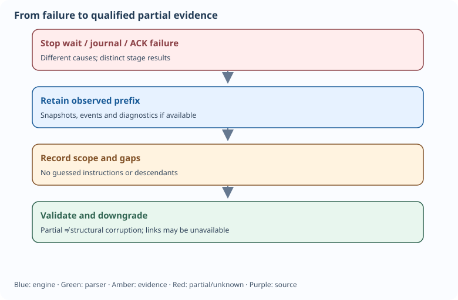

Process lifecycle, forks and event transport #
Level 1 · Intuition #
The debugger follows an inferior; the allocation wrapper can also write PID-labelled events from forked children. Those are different scopes. A child that forks, logs no allocation and exits silently may be invisible. “Every observed PID's events were verified” cannot mean “every descendant was discovered.”


Level 2 · From wrapper file to scoped coverage #
c_runtime/alloc_tracker.c writes complete newline-terminated event lines to C_TRACE_EVENT_FILE with pid, per-process seq, event kind/ID/address and status. Each process has its own local IDs and sequence counter; the Rust timeline can widen IDs to (pid << 32) | local_id when events from multiple PIDs are observed (subject to overflow checks). The journal can retain PID-local transport IDs even when the final JSON has widened IDs: these are different representations, not proof of cross-run equality. The wrapper registers a child-after-fork callback to reset its lock and counters; a terminal ACK is written only on normal shutdown. An abnormal _exit or crash can leave no child ACK. The tailer detects malformed/partial writes, gaps, missing ACKs and caps and marks history incomplete.
heap_history.process_scope="verified_observed_pids_only" describes observed event PIDs plus the followed inferior. heap_history.complete tests this scope's verified sequence/transport/ACK/retention; unobserved_process_coverage="unknown" remains true even if one or several observed PIDs have valid ACKs. GDB retains stopped snapshots for the followed inferior, not guaranteed child instruction/stack snapshots. PID inequality alone is not a verified parent–child relationship for an arbitrary import. An incomplete observed child downgrades heap identity without fabricating a child snapshot.
Worked fork cases #
The phase8dr_fork.c fixture produced in a fresh audit: observed mode has 6 heap events from two event PIDs and scoped completion; silent mode has 4 events from one observed PID and scoped completion despite a silent child; incomplete mode has 6 events from two PIDs with a missing child ACK and complete=false. All three have unobserved_process_coverage="unknown".
Level 3 · Implementation and typed view #
- C:
cte_after_fork_child,cte_write_all,cte_emit_locked, normal-exit status writer inc_runtime/alloc_tracker.c. - Rust:
src/allocation_tracker.rs::{EventTailer, verify_event_status, HeapTimeline::global_id}andsrc/trace.rsassembly ofHeapHistoryCoverage;src/supervisor.rscontrols subprocess groups, cancellation, subreaper ownership and best-effort cgroup handling. - Parser:
TraceStore::heap_process_scope()yieldsHeapProcessScope::Unknown,VerifiedObservedPidsOnly { observed_event_pids, followed_inferior_pid, observed_history_complete }, orUnsupported;validate_deep()verifies annotations against recorded events.process_coverage().unobserved_descendantsremains unavailable on sound traces.
{"complete":true,"process_scope":"verified_observed_pids_only","unobserved_process_coverage":"unknown"}This is an illustrative subset of heap_history, not an all-process claim and not a complete JSON object for the model. Identity tables explain why per-PID sequences and global allocation IDs are not stops or event positions.